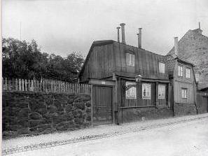
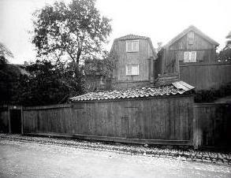

 Fjällgatan 44, år 1903. Bilden tagen västerut från Erstagatan. |
 Fjällgatan 44, år 1907. Bilden tagen västerut från Erstagatan. Närmast till vänster nr 44. |
 Fjällgatan 48-50, Erstagatan 2, före år 1907. Av de två trähusen i bakgrunden är det vänstra nr 50, det högra nr 48. All denna trähusbebyggelse revs senare, när Ersta nya sjukhus byggdes. |